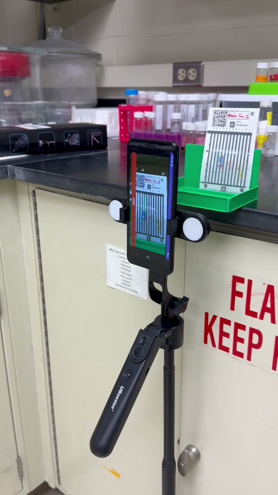
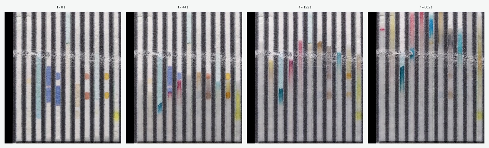
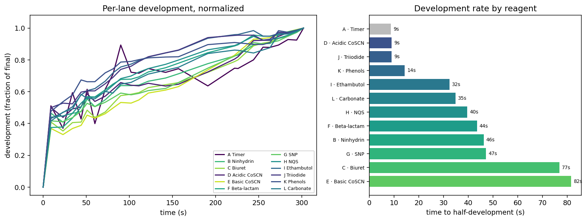

Kinetic PAD: Watching a drug test card develop
What a paper drug test does
A paper analytical device (PAD) is a cheap way to check whether a pill is the drug it claims to be, at roughly the right dose. The card has twelve vertical lanes, each holding a different chemical reagent. You swipe the crushed sample across the card, stand its lower edge in water, and the water climbs the paper by capillary action. As it rises it carries the sample up each lane to react with that lane’s reagent and produce a color. The twelve colors form a barcode that a machine-learning model reads to identify the drug and estimate the dose. The standard readout is one photograph, taken once the card has finished developing.
The single end-of-run photo captures none of that development.
The kinetic idea
The reaction is neither instant nor uniform across lanes, so instead of one photo at the end, take a series. Photographing the same card about every ten seconds gives a record of the reaction as it develops.

Here is one card sampled at four times across five minutes. The wetting front climbs and the lanes color up, but not together.

The change reads more clearly in motion, in the interactive time-lapse viewer an agent generated for the full runs. Some lanes color almost at once; others are still deepening minutes later.
What made it quick: a wiki and its ecosystem
This came together quickly because several pieces were already in place. The initial idea or scientific approach is the most important component of any investigation, but the next steps, building the test setup, acquiring the data, extracting processed data, and using analytic techniques, are often a failure point, as each step is a potential barrier. This is where AI can be a force multiplier in the lab. The data-capture app was built by AI to take sequential pictures, which are sent to the PAD server. The project’s data then sits behind an MCP server. (MCP, the Model Context Protocol, is an open standard that lets an AI agent connect to outside tools and data.) An agent used it to read the card database and images and each lane’s reagent and deposition, and to pull every frame of a run, with no data-handling code written in advance. From those frames the agent also generated the interactive time-lapse viewer on demand, rather than anyone hand-building a frontend.
An llm-wiki is the memory that holds this together. The agent writes findings and caveats to it and reads them back, so they accumulate across sessions instead of resetting, which lanes give a clean signal and where lighting drift confounds them. The wiki is also what reached past this project. When the first color measurements came out depending on the lighting, the agent found an earlier drug-concentration project in the same group through its wiki and reused that project’s color-sampling and white-balance code. The measurement came out of that combination.
Measuring the rates
For one card (sample 85990, an azithromycin card, 25 frames over five minutes), an agent measured each lane’s color change from the dry first frame across the run, using the layout’s lane boxes. Normalizing each lane to its own final color shows the shapes; the summary is the time each lane takes to reach half of its final development.

The spread is large. On this card, time-to-half-development runs from about 9 seconds to 82 seconds, and it tracks which reagent is in each lane. The two cobalt-thiocyanate lanes, D and E, sit at opposite ends: the acidic one reaches half-development in about 9 seconds, the basic one in about 82. Biuret and Basic Cobalt Thiocyanate are the slow pair; Acidic Cobalt Thiocyanate, Triiodide, and Phenols are among the fast ones.
The exact ordering belongs to this azithromycin card. The color forms where the drug meets the reagent, so the rates reflect the drug as much as the reagent, and another drug would reorder them. What holds regardless is the shape of the finding: the lanes run on very different clocks. That the lanes saturate at different times was easy to assume, and to half-see by eye, but here it is measured, a physical record of the separation rather than an impression. A single end-of-run photo cannot show it, because two lanes can finish at the same color while getting there on different schedules.
Why it matters, and what is next
If lanes develop on different clocks, then when you take the reading changes the barcode. A fixed wait is a compromise, too early for the slow lanes and needlessly late for the fast ones. The natural thing to try is to read each lane at its own best moment instead of all of them at once, information a single static image does not carry.
Follow-up work on the fuller set of cards does exactly that, and the trend is encouraging. Taking each lane from its own peak-development frame, splicing those into one composite card, and reading it with the standard pipeline matches or improves on the single end-of-run photo, tested on cards held out from a separate capture session. The card counts are still modest, so this is a consistent direction rather than a settled number. It is early evidence that the timing separation is not only visible but useful: it carries information the final photo leaves behind.
The caveats are real. The rates figure is one card, shown to make the effect concrete, and its metric is color change from the dry first frame, a development proxy rather than a literal capillary-front height. The lane windows come from a fixed layout and each card sits a little differently under the camera, so treat the exact per-lane numbers as approximate. The classification trend rests on more cards but still modest numbers, so it is a direction to confirm, not a final result. The next steps are more cards and drugs, tighter per-card alignment, and separating the wetting front from the color reaction.
The workflow point generalizes past PADs. The card data sat behind an MCP interface and the project’s know-how sat in a wiki, so an agent could find the data, build a viewer, and run a fresh analysis on demand, reusing methods from a sister project, without anyone writing the plumbing first. That is what turned the card database from a static archive into something you could measure against the same afternoon.
Ekezie Okorigwe is a graduate student in the Marya Lieberman lab at the University of Notre Dame, which runs the Paper Analytical Device (PAD) project. The kinetic idea and the time-lapse capture are his; the card images and database come from the PAD project. An agent generated the viewer and the per-lane rate analysis by reaching the data through the project’s MCP interface and keeping its methods and caveats in the project’s LLM-wiki.